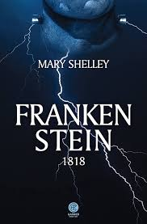

|
A incoveniente Loja de Conveniência Link para encontrar esse livro na Amazon |
Senhora Yeom conhece um personagem morador de rua que se apresentou como Dok-go, pelo motivo que tinha perdido sua bolsinha e Dok-go estava com ela e queria devolver.
Yeom como queria retribuir a bondade do homem cujo parecia um urso, deu-le um emprego em uma loja de conveniência, porque ela era a dona do local. O homem aprendeu rápido a como desempenhar seu trabalho do turno da noite.
Depois de sua chegada, clientes e funcionários aprenderam a como se viver uma vida melhor por causa dos conselhos do homem. Entretanto Dok-go não sabia da sua verdadeira identidade pois havia bebido muito no passado e assim temporariamente perdeu suas memórias, Dok-go nem era seu nome verdadeiro.
Com o passar do tempo Dok-go conseguia viver em sociedade tranquilamente, pelo motivo de ter mudado sua aparência e não beber mais álcool. Assim por alguns clientes sentirem curiosidades de quem era ele no passado, o homem se motivou a descobrir seu passado doloroso e saber viver uma vida mais empática. |
|---|
|
Divinos Rivais 
Link para encontrar esse livro na Amazon |
Iris Winnow trabalhava na Gazeta de Oath, datilografando obituários e relatando notícias, o objetivo dela era subir de cargo como colunista, porém ela tinha um rival que tinha o mesmo objetivo do que ela, Roman Kitt.
A realidade em que Iris vivia era problemática e triste, havia dois deuses que estavam em guerra e isso influenciava a vida dos humanos, já que muitos dos seres humanos eram mortos durante a guerra entre Dacre (deus inferior) e Enva (deusa celeste). O irmão de Winnow - o Forest - desejava lutar na linha de frente para Enva, deixando assim Iris abalada pela partida do seu irmão. Durante esse tempo, ela escrevia cartas para Forest, no entanto quem recebia era uma pessoa desconhecida que começou a escrever cartas para ela, a protagonista estranhara no começo, mas depois eles começaram a compartilhar histórias sendo sobre o passado um do outro ou histórias dos deuses lutando na guerra. Iris estava começando a gostar de seu interlocutor desconhecido (mas a pessoa que ela não sabia quem era, na verdade era Roman Kitt. Contudo Kitt sabia que estava compartilhando cartas com Winnow). Em um momento frágil, ela também sofreu pela morte de sua mãe, todos esses acontecimentos afetaram a vida de Winnow por completo. Sendo assim, florzinha (ela era chamada assim pelo seu irmão) decidiu sair do seu trabalho e trabalhar na Tribuna Inkridden, ela iria continuar datilografando em um jornal, porém escreveria sobre a guerra e viajaria em um lugar que estava perto da linha de frente para relatar fatos sobre a guerra. Iris decidiu sair do seu trabalho para provavelmente encontrar o seu irmão na guerra, já que era o único familiar vivo. Iris Winnow ficou em uma pousada e conheceu duas pessoas importantes, que iriam influenciar sua vida. Surpreendentemente Roman saiu do seu emprego e desejou ficar perto de Iris, eles mesmo sendo rivais e parecerem totalmente diferentes em relação a classe social, no meio de uma guerra se apaixonaram profundamente. |
|---|
|
Frankenstein 1818  Link para encontrar esse livro na Amazon |
A história segue apresentando primeiramente o relato de Warton, um capitão de um navio, que seguia seus relatos com cartas para a sua irmã Margaret.
Seus relatos ressaltavam a chegada de um desconhecido e a felicidade de ter encontrado uma nova amizade. Um ser entrou em seu navio, era Victor Frankenstein, que infortunado por uma perseguição e traumas de sua vida, teve que contar para Walter com suas experiências o quanto a ambição pode trazer desgraças. Assim, Frankenstein contextualizou do por que sua afirmação fazia sentido com sua história, seguiu contando o quanto sua imaginação fértil e sua inteligência e estudos científicos fizeram criar um "mostro vivo". Que mais tarde ele fizera trazer a morte de seus entes queridos e consequentemente a sua morte. |
|---|
|
Powerless 
Link para encontrar esse livro na Amazon |
Paedyn Gray nascida como Comum, em um mundo em que aqueles que só são aceitos são Notáveis - Isso se deu por causa da Peste, uma mortal doença, em que o resultado foram em que pessoas pegaram mutações dessa Peste (Notáveis) e outras não (Comuns).
-Luta pela sua sobrevivência e subsistência, roubando pessoas e fingindo ter poderes para que os Imperiais não matem ela.
Até que em um surpreendente dia, vendo o homem sofrendo com o poder do silenciador, defende ele, Paedyn nocauteia o silenciador, salvando a pessoa que tinha roubado alguns minutos atrás e depois sabendo que era um membro da família real, o Executor, o príncipe Kai. Por acaso, por esse acontecimento pessoas da Alameda dos Larápios(chamam também de favela) vibram e se orgulham desse acontecimento, chamando Pae de "A Paladina Prateada". Paedyn por causa da sua fama é convidada a participar da Prova do Expurgo, onde pessoas selecionadas lutam pelas sua vidas para conquistar a vitória nessas provas. É lá que Paedyn Gray não tendo nenhum poder, apenas sendo Psíquica (um poder inventado para enganar as pessoas que possui um poder, que consiste em saber o que houve em acontecimentos passados), luta pela sua sobrevivência mais uma vez, tentando dessa vez fazer justiça com o que houve com ela, com seu pai, com Adena e com o povo que vira sofrer. |
|---|
|
Quarta Asa 
Link para encontrar esse livro na Amazon |
Violet (filha da general mais importante do instituto militar de Basgiath) tinha o sonho de se tornar escriba na divisão dos escribas, em um mundo cheio de dragões, porém sua mãe a obrigou a se tornar parte da divisão de cavaleiros.
Violet enfrenta vários desafios para entrar nessa divisão, porque a cada erro que ela fizesse, sua sobrevivência estaria em risco, além das pessoas comentarem e terem raiva dela ser filha da general. Existe a questão também de que muitos comentam que seu corpo é frágil
e delicado e que não seria nada forte que nem seus outros irmãos que se tornaram destaques em anos anteriores naquele instituto militar com dragões, no entanto sua determinação e coragem não impedem Violet de continuar lutando, sempre ressaltado seu mantra: "eu não vou morrer hoje".
Ao longe desse caminho Vi encontrou alguns amigos e vários inimigos também (como Jack Balowe) e uma pessoa que ela achava que era seu inimigo (Xaden Riorson). Além de possuir dois dragões, tendo juntamente os poderes consedidos a eles (sua dragão Andarna, com o poder de parar o tempo e o seu dragão Tairn, com o poder de invocar relâmpagos), pois ela se tornara cavaleira. Violet se apaixona por Xaden e Xaden de certa forma se apaixona por ela também, mas Violet descobre segredos que tornam difíceis a relação entre os dois. |
|---|